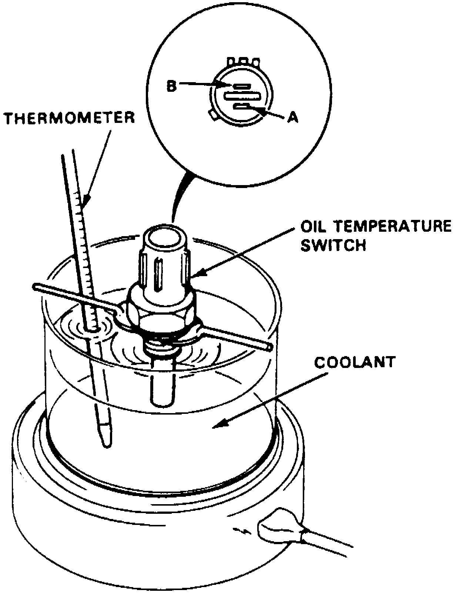
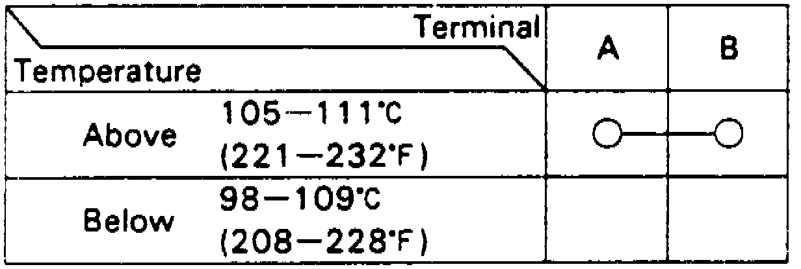

Oil Temperature Sensor/Switch: Testing and Inspection
1. Remove the oil temperature switch from cylinder head.
Fig. 20 Engine Oil Temperature Switch Inspection:

2. Suspend oil temperature switch in a container of coolant, Fig. 20.
Fig. 21 Engine Oil Temperature Switch Continuity Check:

3. Check for continuity between switch terminals A and B and compare results with Fig. 21.
4. If continuity between terminals is not as specified, replace switch.